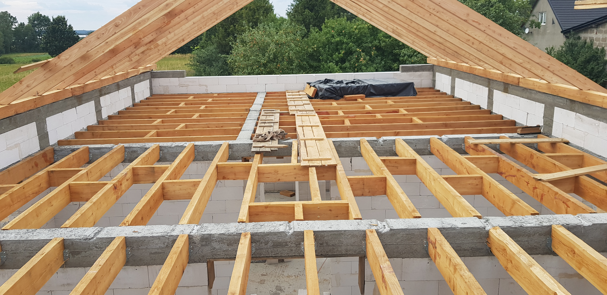
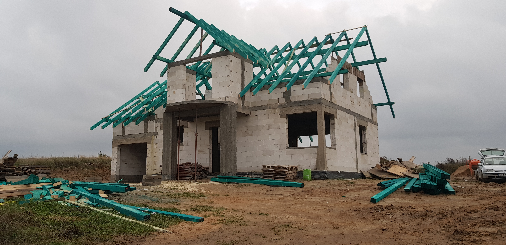
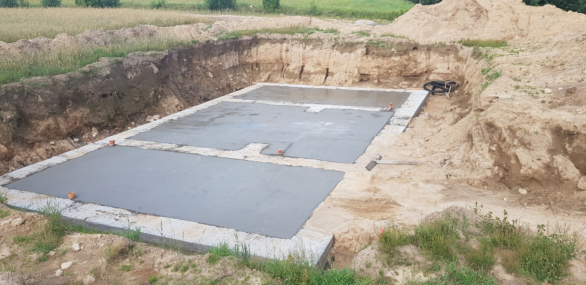
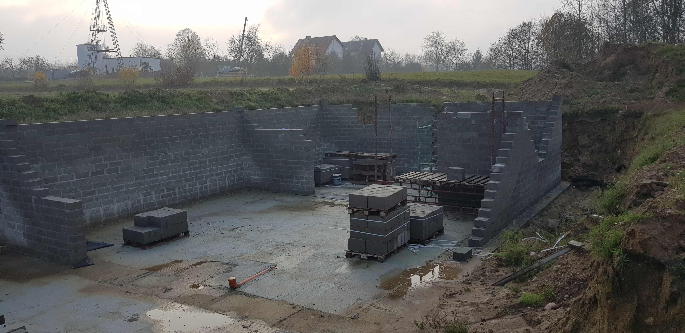
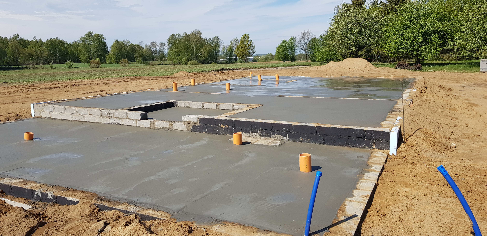

Budowa domów
Budujemy domy jednorodzinne od fundamentów po dach. Prace prowadzone terminowo, z materiałów najwyższej jakości. Obsługujemy projekty typowe i indywidualne na terenie powiatu kartuskiego i okolic.
Budujemy domy, przeprowadzamy remonty i realizujemy wykończenia wnętrz z dbałością o każdy detal. Zaufaj lokalnej firmie z ponad 10-letnim doświadczeniem na Kaszubach.

Nasze usługi budowlane
Oferujemy kompleksowe usługi budowlane w Kartuzy i okolicach. Od projektu po klucz – wszystko w jednym miejscu.
Budujemy domy jednorodzinne od fundamentów po dach. Prace prowadzone terminowo, z materiałów najwyższej jakości. Obsługujemy projekty typowe i indywidualne na terenie powiatu kartuskiego i okolic.
Kompleksowe i częściowe remonty pod klucz. Wymiana instalacji, tynkowanie, układanie płytek, malowanie, gładzie gipsowe. Działamy szybko i bez zbędnego bałaganu.
Zamieniamy surowe ściany w przestrzeń, w której chce się żyć. Posadzki, sufity podwieszane, łazienki, kuchnie – każde wykończenie z dbałością o estetykę i trwałość.
Murowanie, ocieplanie budynków, budowa garaży, altanek i tarasów, ogrodzenia, prace ziemne oraz wyburzenia. Każde zlecenie wyceniamy indywidualnie i bezpłatnie.

O firmie
Jesteśmy lokalną firmą budowlaną z siedzibą w Kartuzy. Od 2008 roku realizujemy zlecenia dla klientów indywidualnych i firm z regionu Kaszub i Trójmiasta. Nasz zespół to doświadczeni fachowcy, którym można zaufać.
Galeria realizacji
Przejrzyj wybrane realizacje firmy budowlanej Kobiel z Kartuz – budowy domów, remonty i wykończenia wnętrz.





Kontakt
Napisz lub zadzwoń – odpowiadamy w ciągu 24 godzin. Pierwsza wycena jest zawsze bezpłatna i niezobowiązująca.
Wypełnij formularz, a odezwiemy się najszybciej jak to możliwe.
Dziękujemy za zapytanie. Skontaktujemy się z Tobą w ciągu 24 godzin roboczych.